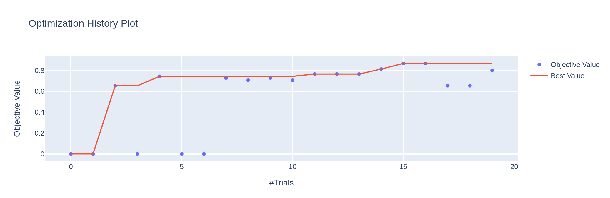

import optunaOptuna
Optuna automates hyperparameter optimization.

Why Optuna?
- impertive and define-by-run code style is great!
- algorithm agnostic - optimize anything
Hyperparameter
The knobs üéõÔ∏è that dictate how machines learn. Knobs like: length of training, maximum depth of tree and strength of regularization.
Every type of machine learning algorithm has its own set of hyperparameters. The norm till now has been to get a intitutive sense of what hyperparameters to use for different types of problems and different datasets; or do a grid-search.
Sequential Model Based Optimisation (SMBO)
Sequentially selecting different hyperparameter sets where next set is selected by Bayesian reasoning (dependent on the previous runs).
As a stark difference to grid-search where we already have a set of hyperparameters to search, instead we look at the previously selected hyperparameters and it’s results to intelligently select the next set of hyperparameters to search.
Installation
# pip
pip install optuna# conda
conda install -c conda-forge optunaUsage
Example
# imports
import pandas as pd
from sklearn.datasets import make_classification
from sklearn.linear_model import LogisticRegression
from sklearn.metrics import accuracy_score, f1_score, roc_auc_score
from sklearn.model_selection import train_test_split# make sample dataset
X, y = make_classification(class_sep=0.5, random_state=0)
X[:2], y[:2](array([[-0.03926799, 0.13191176, -0.21120598, -0.7141474 , 0.89992843,
-0.42132759, 0.76877064, 0.87569568, 2.45122972, -0.48024204,
-1.42296498, -0.52325094, 0.70869527, -1.98056559, -1.36516288,
-0.94893281, 1.94709864, 1.47698901, 1.02122474, -0.46931074],
[ 0.77416061, 0.10490717, -0.33281176, -0.77034986, 0.22899659,
-0.82282832, -0.61262574, 1.49613964, 0.56845892, -0.46749317,
-1.09203185, -0.8624933 , -0.63119194, 0.13391292, -0.97240289,
-0.77445897, 1.34622107, 0.7678044 , 0.62251914, -1.49026539]]),
array([0, 0]))# split into train-test sets
X_train, X_test, y_train, y_test = train_test_split(
X, y, test_size=0.33, random_state=42
)# without optuna
model = LogisticRegression(random_state=23)
model.fit(X_train, y_train)
print(f"Train F1 Score : {f1_score(y_train, model.predict(X_train))}")
print(f"Test F1 Score : {f1_score(y_test, model.predict(X_test))}")Train F1 Score : 0.7761194029850745
Test F1 Score : 0.742857142857143# objective function
def objective(trial):
params = {
"C": trial.suggest_loguniform("C", 1e-4, 1e1),
"penalty": trial.suggest_categorical("penalty", ["l2", "l1", "elasticnet"]),
"solver": "saga",
"random_state": 0,
"n_jobs": 14,
}
# you can have conditional params.
if params["penalty"] == "elasticnet":
params["l1_ratio"] = trial.suggest_loguniform("l1_ratio", 1e-3, 1)
model = LogisticRegression(**params)
model.fit(X_train, y_train)
# return the value to be optimized
return f1_score(y_test, model.predict(X_test))
# optuna's study - set direction of optimization
study = optuna.create_study(direction="maximize")
# something like model.fit()
study.optimize(objective, n_trials=20)[I 2022-04-25 11:02:02,189] A new study created in memory with name: no-name-d513816f-f254-49a1-a1dc-4999f55050eb
[I 2022-04-25 11:02:02,237] Trial 0 finished with value: 0.0 and parameters: {'C': 0.001035440904319486, 'penalty': 'elasticnet', 'l1_ratio': 0.0168047681115154}. Best is trial 0 with value: 0.0.
[I 2022-04-25 11:02:02,250] Trial 1 finished with value: 0.0 and parameters: {'C': 0.0008908409534393241, 'penalty': 'elasticnet', 'l1_ratio': 0.015358624475662915}. Best is trial 0 with value: 0.0.
[I 2022-04-25 11:02:02,269] Trial 2 finished with value: 0.653061224489796 and parameters: {'C': 0.00016370922155922157, 'penalty': 'l2'}. Best is trial 2 with value: 0.653061224489796.
[I 2022-04-25 11:02:02,309] Trial 3 finished with value: 0.0 and parameters: {'C': 0.0009138573600528666, 'penalty': 'elasticnet', 'l1_ratio': 0.3449491818274051}. Best is trial 2 with value: 0.653061224489796.
[I 2022-04-25 11:02:02,337] Trial 4 finished with value: 0.742857142857143 and parameters: {'C': 0.33000390588332, 'penalty': 'l2'}. Best is trial 4 with value: 0.742857142857143.
[I 2022-04-25 11:02:02,710] Trial 5 finished with value: 0.0 and parameters: {'C': 0.004900173758953741, 'penalty': 'elasticnet', 'l1_ratio': 0.5739239633308959}. Best is trial 4 with value: 0.742857142857143.
[I 2022-04-25 11:02:02,725] Trial 6 finished with value: 0.0 and parameters: {'C': 0.0008523376996942561, 'penalty': 'l1'}. Best is trial 4 with value: 0.742857142857143.
[I 2022-04-25 11:02:02,739] Trial 7 finished with value: 0.7272727272727272 and parameters: {'C': 0.004253229678729536, 'penalty': 'elasticnet', 'l1_ratio': 0.005630194052029165}. Best is trial 4 with value: 0.742857142857143.
[I 2022-04-25 11:02:02,749] Trial 8 finished with value: 0.7058823529411765 and parameters: {'C': 0.004046243863102824, 'penalty': 'elasticnet', 'l1_ratio': 0.0017367022371214882}. Best is trial 4 with value: 0.742857142857143.
[I 2022-04-25 11:02:02,764] Trial 9 finished with value: 0.7272727272727272 and parameters: {'C': 0.03109891412503484, 'penalty': 'l2'}. Best is trial 4 with value: 0.742857142857143.
[I 2022-04-25 11:02:02,820] Trial 10 finished with value: 0.7058823529411765 and parameters: {'C': 7.8208518561020846, 'penalty': 'l2'}. Best is trial 4 with value: 0.742857142857143.
[I 2022-04-25 11:02:02,867] Trial 11 finished with value: 0.7647058823529411 and parameters: {'C': 0.9355154190877125, 'penalty': 'l1'}. Best is trial 11 with value: 0.7647058823529411.
[I 2022-04-25 11:02:02,910] Trial 12 finished with value: 0.7647058823529411 and parameters: {'C': 1.3562536567204646, 'penalty': 'l1'}. Best is trial 11 with value: 0.7647058823529411.
[I 2022-04-25 11:02:02,957] Trial 13 finished with value: 0.7647058823529411 and parameters: {'C': 1.6829408470804865, 'penalty': 'l1'}. Best is trial 11 with value: 0.7647058823529411.
[I 2022-04-25 11:02:02,992] Trial 14 finished with value: 0.8125 and parameters: {'C': 0.27325083947591605, 'penalty': 'l1'}. Best is trial 14 with value: 0.8125.
[I 2022-04-25 11:02:03,040] Trial 15 finished with value: 0.8666666666666666 and parameters: {'C': 0.14326745204868416, 'penalty': 'l1'}. Best is trial 15 with value: 0.8666666666666666.
[I 2022-04-25 11:02:03,078] Trial 16 finished with value: 0.8666666666666666 and parameters: {'C': 0.11051572179107788, 'penalty': 'l1'}. Best is trial 15 with value: 0.8666666666666666.
[I 2022-04-25 11:02:03,133] Trial 17 finished with value: 0.653061224489796 and parameters: {'C': 0.06645745504510152, 'penalty': 'l1'}. Best is trial 15 with value: 0.8666666666666666.
[I 2022-04-25 11:02:03,182] Trial 18 finished with value: 0.653061224489796 and parameters: {'C': 0.05066087235412606, 'penalty': 'l1'}. Best is trial 15 with value: 0.8666666666666666.
[I 2022-04-25 11:02:03,227] Trial 19 finished with value: 0.7999999999999999 and parameters: {'C': 0.1937529842391572, 'penalty': 'l1'}. Best is trial 15 with value: 0.8666666666666666.
Note
The above cell outputs logs from Optuna. Jupyter thinks these are errors and displays them in red. Ignore this.
# best trail
study.best_params, study.best_value({'C': 0.14326745204868416, 'penalty': 'l1'}, 0.8666666666666666)# see trails sorted by objective values
study.trials_dataframe().sort_values('value',ascending=False).head()| number | value | datetime_start | datetime_complete | duration | params_C | params_l1_ratio | params_penalty | state | |
|---|---|---|---|---|---|---|---|---|---|
| 16 | 16 | 0.866667 | 2022-04-25 11:02:03.042372 | 2022-04-25 11:02:03.078160 | 0 days 00:00:00.035788 | 0.110516 | NaN | l1 | COMPLETE |
| 15 | 15 | 0.866667 | 2022-04-25 11:02:02.995554 | 2022-04-25 11:02:03.039449 | 0 days 00:00:00.043895 | 0.143267 | NaN | l1 | COMPLETE |
| 14 | 14 | 0.812500 | 2022-04-25 11:02:02.961086 | 2022-04-25 11:02:02.991294 | 0 days 00:00:00.030208 | 0.273251 | NaN | l1 | COMPLETE |
| 19 | 19 | 0.800000 | 2022-04-25 11:02:03.187038 | 2022-04-25 11:02:03.226408 | 0 days 00:00:00.039370 | 0.193753 | NaN | l1 | COMPLETE |
| 11 | 11 | 0.764706 | 2022-04-25 11:02:02.823591 | 2022-04-25 11:02:02.866632 | 0 days 00:00:00.043041 | 0.935515 | NaN | l1 | COMPLETE |
Tip
Best way to search for optimial hyperparameters is to cross-validate.
Persistence
Optuna works with in-memory storage (like in the example above). It is also possible to save and resume from RDB Backend.
# creates a table in the db with the study_name as table name
study = optuna.create_study(study_name="my_study", storage="sqlite:///example.db")storage can point to any RDB system.
study = optuna.create_study(study_name="my_study", storage="mysql://root@localhost/example")Parallelization
It is easy to parallelize Optuna. You simply point to the same storage and run the script multiple time. Here is an link to optuna’s documentation on this. The video on this page is a must watch, it’s awesome.
Each trials is independent of each other, therefore the only requirements for each trials is the set of previous trials and it’s resultant objective value.
Tip
You can load the study while you have the optimization script(s) running to see the results in real-time.
loaded_study = optuna.load_study(study_name="my_study", storage="sqlite:///example.db")Search Model Types
Search different model types in the same objective function.
def objective(trial):
model_type = trial.suggest_categorical('model_type', ['logistic-regression','svm'])
if model_type == 'svm':
kernel = trial.suggest_categorical('kernel', ['linear', 'poly', 'rbf', 'sigmoid'])
model = SVC(kernel=kernel, C=regularization, degree=degree)
if model_type == 'logistic-regression':
penalty = trial.suggest_categorical('penalty', ['l2', 'l1'])
model = LogisticRegression(penalty=penalty, C=regularization, solver=solver)
...Visualization
Optuna use plotly to visualize trails. Here is the list of visualization available out of the box.
Warning
plotly must be installed for the following code to work. Install with pip install plotly
fig = optuna.visualization.plot_optimization_history(study)
fig.show()
Samplers
Samplers are the method Optuna uses to choose the next hyperparameters to search.
Among the samplers are :
- TPE : Bayesian optimization based on kernel fitting
- GP : Bayesian optimization based on Gaussian processes
- CMA-ES : meta-heuristic algorithm for continuous space
TPE is the default sampler (for single objective value)
Note
It is possible to optimize for multiple values and have directions for each. This may be useful if you are trying to reduce overfit but increase test’s set performance.
Search Spaces
LightGBM
params = {
"lambda_l1": trial.suggest_float("lambda_l1", 1e-8, 10.0, log=True) ,
"lambda_l2": trial.suggest_float("lambda_l2", 1e-8, 10.0, log=True) ,
"num_leaves": trial.suggest_int("num_leaves", 2, 2**8 ),
"feature_fraction": trial.suggest_float("feature_fraction", 0.4, 1.0 ),
"bagging_fraction": trial.suggest_float("bagging_fraction", 0.4, 1.0),
"bagging_freq": trial.suggest_int("bagging_freq", 1, 7),
"min_child_samples":trial.suggest_int("min_child_samples", 5, 100),
}XGBoost
# https://raw.githubusercontent.com/abhishekkrthakur/autoxgb/main/src/autoxgb/params.py
params = {
"learning_rate": trial.suggest_float("learning_rate", 1e-2, 0.25, log=True),
"reg_lambda": trial.suggest_float("reg_lambda", 1e-8, 100.0, log=True),
"reg_alpha": trial.suggest_float("reg_alpha", 1e-8, 100.0, log=True),
"subsample": trial.suggest_float("subsample", 0.1, 1.0),
"colsample_bytree": trial.suggest_float("colsample_bytree", 0.1, 1.0),
"max_depth": trial.suggest_int("max_depth", 1, 9),
"early_stopping_rounds": trial.suggest_int("early_stopping_rounds", 100, 500),
"n_estimators": trial.suggest_categorical("n_estimators", [7000, 15000, 20000]),
}
if use_gpu: # if training on GPU
params["tree_method"] = "gpu_hist"
params["gpu_id"] = 0
params["predictor"] = "gpu_predictor"
else:
params["tree_method"] = trial.suggest_categorical("tree_method", ["exact", "approx", "hist"])
params["booster"] = trial.suggest_categorical("booster", ["gbtree", "gblinear"])
if params["booster"] == "gbtree":
params["gamma"] = trial.suggest_float("gamma", 1e-8, 1.0, log=True)
params["grow_policy"] = trial.suggest_categorical("grow_policy", ["depthwise", "lossguide"])Data-centric AI
As we move to understanding more about data-centric AI, we are automating away the model-centric part which has fascinated us for a while now. Optuna is a step in this process.